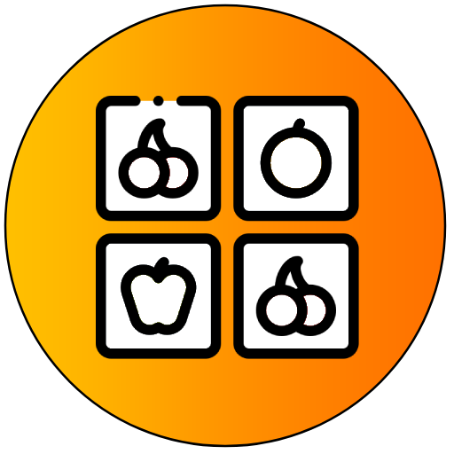

Bienvenido a la tabla de puntajes de Totivinanza!
Para poder ver la tabla de puntajes, primero debes seleccionar la dificultad del cual deseas ver los puntajes.
A continuación se mostrarán los mejores 5 tiempos en dicha dificultad!
Fácil
Medio
Difícil
{{i + 1}}
{{puntajeObtenido.nombreUsuario}}
{{puntajeObtenido.tiempoParseado}}
{{puntajeObtenido.fecha}}